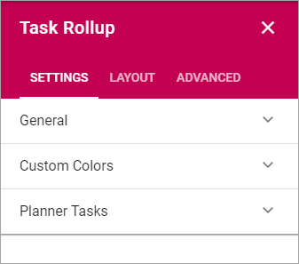
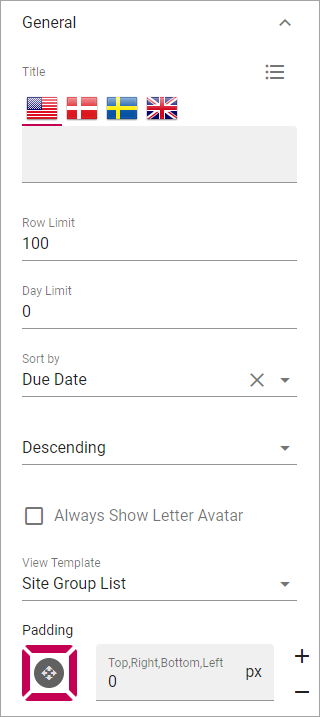
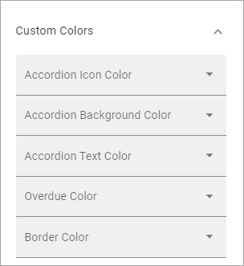

Task Rollup¶
This block can be used to show tasks assigned to the logged in user. Tasks from Team Sites will always be shown. Tasks from Planner can also be added.
All sites with tasks assigned to the user is displayed in a list. Here’s an example with the list opened for one of the sites:

Settings¶
The following settings are available:
General¶
The following is availabled here:
- Title: If a title should be shown for the block, add it in this field. If no variation exists for the page, it looks like in the image above and you can set the title in the languages active in the tenant. If variations exists, only one title can be set. In that case, titles in other languages are set in the variations.
- Row Limit: The maximum number of tasks to show in the list.
- Day Limit: How many days forward in time to show assigned tasks. 0 = no limit.
- Sort by: Select which column the list should be sorted on, and then select ascending or descending.
- Always Show Letter Avatar: Select if a letter avatar should always be shown instead of site image.
- View Template: Select View Template here; “Simple list” or “Site Group List”.
- Padding: You can add padding between the list and the block border if needed.
Custom colors¶
You should primarily set colors in Omnia Admin (System/Settings/Default colors). If you still would like custom colors for the block, you can set them using this tab.
Planner Tasks¶
Check the box “Enable Planner Tasks” to include tasks from planner in the Tasks Rollup.

Layout and Advanced¶
The tabs Layout and Advanced contain general settings, see: General Block Settings